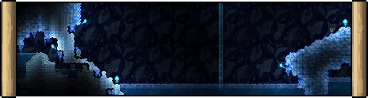

Biomas Terraria
Bosque
El bosque es el bioma principal en el cual siempre aparece el jugador al comenzar un mundo, está conformado por tierra y césped, con plantas y árboles. Al ser el bioma principal, es el menos peligroso
Desierto
El desierto es un bioma conformado principalmente de arena y cactus. Suele aparecer de un lado del bosque central.
Tundra
La tundra es un bioma de nieve que se encuentra cerca del bosque central, del lado de la mazmorra. Se compone de bloques de nieve, hielo y árboles boreales, se puede encontrar la planta Espinatemblor y en vez de llover, nieva.
Corrupcion
La corrupción es una de las posibles maldades que puede aparecer en el mundo. Es un bioma peligroso y que se expande constantemente, infectando el césped, la piedra, arena y el lodo.
Carmesi
El Carmesi es una de las posibles maldades que puede aparecer en el mundo. Es un bioma peligroso y que se expande constantemente, infectando el césped, la piedra, arena y el lodo.
Selva
La selva es un bioma que se encuentra cerca del borde del mundo y del lado contrario a la mazmorra. Está conformado por lodo, césped selvático y árboles de caoba.
Mazmorra
La mazmorra es un bioma que se encuentra cerca del borde del mundo y del lado contrario a la selva. Se conforma por ladrillos de mazmorra azules, rosas o verdes. En él se encuentra el anciano, con el cual se puede enfrentar a esqueletrón y luego acceder a la parte subterránea, donde hay cofres dorados cerrados con llave, cofres de biomas y monstruos peligrosos.
Bioma Champiñon
El bioma de champiñones superficial es un bioma artificial que puede ser creado con 200 bloques de lodo y semillas de césped de champiñón o con el Clentaminator y que puede provocar que el NPC Trufa se genere y se mude al bioma.

Oceano
Los océanos son grandes masas de agua que aparecen en los costados del mundo. Están conformados por Arena, Corales, Estrellas de mar y Conchas. Suelen tener cofres que contienen objetos útiles, pero difíciles de obtener, ya que el jugador se puede ahogar fácilmente y los monstruos del bioma son peligrosos.

Espacio
El espacio exterior o cielo es un bioma que se encuentra en la parte superior del mundo. Aquí se pueden encontrar las islas flotantes, que contienen casas con cofres o bien un lago.
Bendicion
La bendición es un bioma que se genera en el mundo al matar al Muro carnoso. Este se expande, como el bioma malvado, pero los NPCs pueden vivir en ella y no afecta a la selva. No puede corromper la Corrupción ni el Carmesí, pero sí detendrá el avance de estos.
Biomas Subterraneos
| Subsuelo | El subsuelo es un bioma subterráneo que aparece debajo del bosque. En este abunda la piedra, los minerales y empiezan a aparecer casas subterráneas y trampas. |
|
| Desierto Subterraneo | El desierto subterráneo es un bioma accedido en el agujero que aparece en cada desierto. Está conformado por arena, arenisca y fósiles del desierto. Es un bioma peligroso, pero útil en cuanto a recursos y dinero. |
Tundra Subterranea | La Tundra subterránea es un bioma accedido por las cuevas en la superficie del bioma. En este, el agua está cubierta por hielo frágil, y hay casas con cofres helados. |
 |
| Selva Subterranea | La selva subterránea es un bioma que es accedido por los agujeros en la selva superficial y se extiende hasta el inframundo. Hay enemigos muy peligrosos, pero se puede obtener una gran cantidad de dinero y objetos especiales de los cofres dorados. También hay árboles de caoba vivientes y santuarios con cofres. En ella se puede encontrar colmenas, en donde se puede enfrentar a la abeja reina, y el templo de la selva, donde está el Gólem. |
|
| Champiñon Subterraneo | El bioma de champiñones subterráneo es un pequeño bioma natural que aparece en pocas partes del mundo. En esta hay lodo, césped de champiñón y champiñones brillantes, que pueden recogerse. De aquí se deben obtener las semillas para el bioma artificial en la superficie. |
 |
| Templo de Selva | El templo de la selva es una gran estructura que aparece en cualquier parte de la selva subterránea. Es casi impenetrable, a excepción de que puede ser accedido por la entrada usando una llave del templo, soltada por Plantera o un pico capaz de minar los Bloques de Lihzahrd. En este hay varias trampas y al final de este una sala con un altar de lihzahrd para invocar al Gólem. |
|
| Corupcion Subterranea | La corrupción subterránea es un bioma que aparece al matar al Muro carnoso. Este infecta toda una línea que se extiende desde la superficie hasta el inframundo. A diferencia de la superficie, este presenta monstruos mucho más poderosos. Estos pueden soltar almas de noche. |
|
| Carmesi Subterraneo | El carmesí subterráneo es un bioma que aparece al matar al Muro carnoso. Este infecta toda una línea que se extiende desde la superficie hasta el inframundo. |
|
| Bendicion Subterranea | La bendición subterránea es un bioma que se genera al derrotar al Muro carnoso. Este aparece directamente debajo de la bendición de la superficie. Los monstruos son capaces de soltar almas de luz. |
|
| Inframundo | El inframundo o infierno es el bioma que se extiende por toda la parte inferior del mundo. Esta conformado principalmente por ceniza, piedra infernal y mucha lava. En él se pueden encontrar casas en ruinas hechas de ladrillos de obsidiana y de piedra infernal, con varios muebles de obsidiana en el interior. Otras cosas destacadas son la forja infernal, que suele aparecer en estos edificios, y los cofres de las sombras, que pueden ser abiertos con una llave de las sombras. |